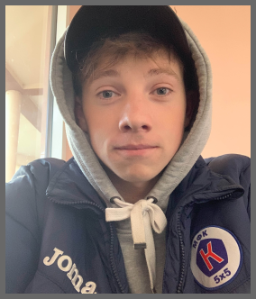

Notitanic
contact
abaut me
home
portfolio

.png)
Hello
I'm Gleb Kostrubov
I've been doing web design, front-end and back-end development for a year now. Do you need a website design, site layout, or maybe a turnkey website? Then contact me.


abaut me
Hello again everyone! So, you already know that my name is Gleb. A little about myself: student, 18 y.o., athlete-football player, I love creativity since childhood, I live in Donetsk, Ukraine. Why programming? Everything is elementary - I like it, the profession of the future, thanks to which I can provide myself and fulfill my dream - travel, at the moment I specialize in web design, front-end and back-end development, turnkey websites. Why should you choose me? I approach each order with great responsibility and love, as I want to make a name for myself, exclude plagiarism and negligence, fully study the project, the client and its target audience, work for quality, trying to make an order as quickly and uniquely as possible, taking into account all the edits and wishes. By trusting me, you will get the maximum return for your project, save your nerves and time. If you are interested in me , you want to know something more or use my services, then I will provide all my contacts below.



portfolio